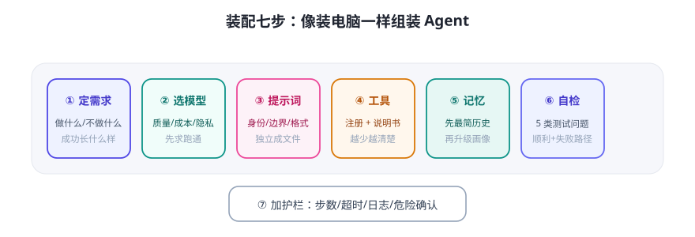

组装 Agent 和装电脑很像：先明确要它干什么，再选零件、接线、开机自检。今天以“带工具的个人助理”为例走全流程。

装配七步
- 定需求：它能做什么、不能做什么、成功长什么样。例：“查天气 + 查时间 + 简单问答”，不碰文件系统。
- 选模型：按质量/成本/隐私选。先求跑通，用便宜模型即可。
- 写系统提示词：身份、职责、边界、输出格式（Day 8 模板直接用）。
- 准备工具：把
get_weather()（Day 10 现成）注册成 Tool，写清 description。 - 接记忆：先接最简对话记忆（历史列表），跑通后再升级。
- 组装 + 自检：跑 5 类测试问题：正常调用 / 无此工具 / 工具报错 / 多轮记忆 / 越权请求。
- 加护栏：最大步数、超时、危险工具确认、日志。
组装示意（结构伪代码，勿背）
system_prompt = load("prompts/assistant.txt") # ① 系统提示词（独立文件管理）
tools = [register(get_weather), register(get_time)] # ② 工具清单（含说明书）
agent = Agent(
model=model,
system=system_prompt,
tools=tools,
memory=SimpleMemory(),
max_steps=5, # 护栏：最多 5 步
timeout=30,
)
reply = agent.chat("上海今天下雨吗？")
最容易翻车的三个点（提前防）
- 工具 description 写得太糊 → 模型不会用或乱用。写好“何时用、参数含义、反例”。
- 系统提示词和工具行为打架 → 提示词说“绝不联网”，工具却给了搜索，模型会困惑。保持一致性。
- 只测“顺利路径” → 工具报错、模型返回非法 JSON、用户乱输入，都要测。程序侧解析要兜底。
💡 工程习惯：系统提示词、工具列表、模型配置都放进独立配置文件（YAML/JSON），别硬编码在代码里——改配置不用改代码、还能做版本对比。这是“Agent 应用”和“脚本”的分水岭。
✍️ 今日练习（约 30 分钟）
- 用上面的七步，为你的场景写一份《装配单》：零件清单 + 系统提示词草稿 + 5 个自检问题。
- 若有 Key 和框架环境：照着官方示例把“天气 + 时间”Agent 跑通，并在第 6 步的 5 类问题上记录结果。
- 没有环境也没关系：把 Day 7 的
mini_agent.py当成“组装好的 Agent”，对照七步找出它缺了哪几步的护栏。
📌 今日小结
装配七步定需求 → 选模型 → 系统提示词 → 工具 → 记忆 → 自检 → 护栏
防翻车工具描述要清楚 · 提示词与工具不打架 · 多测失败路径
工程习惯配置外置（YAML/JSON）、提示词独立成文件、全程留日志
明天预告：当一个任务有多个工具、多个步骤时，怎么编排才不会乱？学“多工具与多步骤任务编排”。